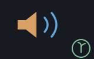

A West Riding mill ran on sound, and the buzzer — the steam hooter on the
engine house roof, heard across the whole valley — was the one sound the mill
made on purpose. The buzzer is Shoddy's sound device.
The built-in words (Sound, NoteOn,
NoteOff, SoundQueue, SoundStop,
SoundGain, SoundWave) make the mill beep, hold,
and sing; this machine is
the musical layer on top, written in ordinary Shoddy: note names
(NoteFreq("C4")), MIDI numbers (MidiFreq(69) is
A 440), and a Play word that reads a tune written in
GW-BASIC's Music Macro Language — Play(1, "T120 O4 L8 C D E F G2")
— and queues it, note by note, onto a channel. There is no handle and no
window: a console program may beep, and a chord is just three calls in a
row.
Sound is the cheapest feedback there is. A game wants a blip when the player jumps and a buzz when they fall; a long-running job wants to announce that it's done; a toy synthesizer wants to sing under the mouse; and some programs just want to play a tune because playing a tune is a delight. Doing any of that from first principles means an audio library, a mixer, a thread, and a pile of format negotiation — none of which has anything to do with the program you were writing. The buzzer gives you the three things you actually mean — beep now, hold this note until I say stop, and here is a tune, play it while I get on with something else — as one word each, and this machine adds the vocabulary music is written in: letters, octaves, and note lengths instead of hertz and milliseconds.
Early computers were silent on purpose and noisy by accident — you could
hear the fans and the line printer, and operators famously learned to tell a
healthy run from a crashed one by the sound of the machine room, or
by parking an AM radio on the cabinet and listening to the interference. The
first deliberate computer sound was a speaker wired to a single bit: flip the
bit fast enough and regularly enough and the cone's clicks blur into a tone.
That is a square wave — the voltage is either on or off,
nothing in between — and it is why every early machine from the PDP-1 to the
IBM PC had the same reedy, insistent voice. The PC's own speaker was exactly
this: one bit, toggled by a timer chip, no volume control. BASIC put a
friendly face on it: SOUND freq, duration and, from IBM's BASICA
and Microsoft's GW-BASIC in the early 1980s, PLAY with its
Music Macro Language — "T120 O4 L8 C D E F G2" —
a tiny notation for tempo, octave, length, and note that let a schoolchild
type in a tune from a magazine. Shoddy's buzzer keeps both words and the
notation; its MML is a faithful subset of GW-BASIC's, with one deliberate
correction (octaves are numbered so that O4 contains middle C,
matching modern scientific pitch — GW-BASIC's sat one lower).
Home computers of the same years did better than one bit: they carried
sound chips — the TI SN76489, the AY-3-8910, Commodore's
famous SID — which offered a handful of independent channels, each
holding one tone at a time, mixed in hardware. A chip with three channels
could play a chord, or a melody over a bass line. The buzzer's eight numbered
channels are exactly this idea, kept because it is a good one: a channel is
an address for a note, so a program can retune it, silence it, or queue more
music onto it, deterministically, without a heap of handles. What replaced
the chips is what runs underneath here: software mixing. Since the late
1990s (the buzzer uses OpenAL, from 2000) the machine's audio hardware just
streams samples, and a library mixes any number of voices in its own output
thread — which is why the anonymous Sound pool can afford ~16
simultaneous blips where the SID owned exactly three.
One more inheritance, this time from music itself. Western tuning divides
the octave into twelve equal-tempered semitones — each step
multiplies the frequency by 21/12 — anchored at
A = 440 Hz, an international standard since 1939. MIDI (1983)
numbered those semitones, calling A 440 note 69, and that numbering is
now how software talks about pitch. MidiFreq is the whole scheme
in one line: 440 * 2 ^ ((midi - 69) / 12).
Equal temperament comes out irrational, and the buzzer never rounds it —
fractional MIDI numbers are legal, which is what makes the demo's mouse
glissando glide instead of step.
Everything in the API falls out of one question: who owns a note's lifetime? There are three answers, and each gets its own words.
Sound(freq, ms) plays a blip from an anonymous pool of voices
and returns immediately. Game effects. If every voice is busy the oldest is
quietly stolen — classic sound-chip behaviour: never block, never error. A
chord is three consecutive calls; they start within microseconds and the
mixer does the rest.NoteOn(ch, freq) starts a note that has no duration: it sounds
until NoteOff(ch). This is a held key on a synthesizer.
NoteOn on a channel already holding a note retunes it
in place, with no re-attack — exactly what a pitch bend or a
glissando wants.SoundQueue(ch, freq, ms) appends a note to a channel's queue;
queued notes play strictly back-to-back, sample-accurately, with no further
help from the program. A frequency of 0 is a rest. This is how you play a
melody: hand the whole tune over and go back to your event loop. (Don't
drive a melody from timer ticks — tick timing is for animation and is
audibly lumpy for rhythm.)Channels are numbered 1–8 (Shoddy is 1-based everywhere)
and serve the second and third models; the anonymous pool serves the first;
they coexist. SoundStop(ch) silences a channel now — releases
any held note, flushes any queue. SoundGain(ch, vol) sets a
channel's volume, 0–1, and is sticky until set again.
SoundWave(ch, wave) picks a channel's timbre the same sticky
way: 0 square (the default), 1 triangle, 2 sine — this machine names them
WaveSquare/WaveTriangle/WaveSine.
Changing the wave re-voices a held note in place at its current pitch. The
anonymous pool always speaks square.
This machine turns music notation into those calls:
Include "buzzer.shoddy"
Def Main()
Play(1, "T160 O4 L8 C E G > C4") ' a jingle, queued and forgotten
Sound(NoteFreq("A5"), 100) ' one blip, by note name
Sleep(2000) ' let it ring before Main returns
Play(ch, mml) parses a Music Macro Language string and queues
every note onto channel ch; it returns as soon as the tune is
queued, which is immediately. The MML subset, case-insensitive, whitespace
ignored:
| Notation | Meaning |
|---|---|
| C D E F G A B | A note. Optional # or + (sharp), - (flat); optional length number (4 = quarter, 8 = eighth…); optional trailing . (dotted, ×1.5). G2 is a half-note G. |
| On | Octave 0–8, default 4. Scientific pitch: O4 contains middle C. |
| < > | Octave down / up. |
| Ln | Default note length, default 4 (quarter notes). |
| Tn | Tempo in quarter notes per minute, default 120. |
| Pn Rn | A rest of length n (dotted allowed). |
| , | A quarter-note rest — always length 4, whatever Ln says. Handy between phrases: "L8 C C C, C C C". |
A whole note lasts 4 * 60000 / T
milliseconds and a length-n note divides that. A malformed
string raises an error naming the offending position. (GW-BASIC's
MN/ML/MS articulation modes,
Nn, and per-note volume are deliberately left for later.)
A few things worth knowing:
mill run and
mill dap (yes, sound works under the debugger). Woven output run
via bare dotnet, and any machine with no audio device, is
silent: every sound word is a no-op there, never an error. This is
the one deliberate divergence from the scribbler,
which fails loudly headless — it must, because a headless
ScribblerWait would hang forever. Sound has no wait, so silence
is safe, and your tests never fail because the build agent has no
speakers.NoteOn onto a channel with a queue flushes the
queue; SoundQueue onto a channel holding a note releases the
note. Deterministic replace, your own choice — no stealing heuristics on
channels.The pure half and the noisy half. MmlNotes —
MML string in, List Of BuzzerNote out — does no I/O at all, so
scores parse, print, and test headless; Play is nothing but
SoundQueue folded over its output (via PlayNotes,
which you can also feed a list you built yourself). The parser is a chain of
small tail-recursive words (MmlRun, MmlCmd,
MmlStep… — the Mml-prefixed words are internal)
threading octave, default length, and tempo through as arguments, the way a
purely functional language carries state: in plain sight.
The seam. The runtime validates arguments and calls
through six nullable delegates (BuzzerRegistry, the
ScribblerRegistry precedent); the mill installs them at startup
and owns the audio library — OpenAL, which mixes all voices in its own
output thread — entirely. Null delegates are what "silent" means: headless,
every word validates and then does nothing. The audio device opens lazily on
the first sound call, so a program that never beeps never pays for one; if
the device fails to open (a server, a container, CI), the buzzer degrades to
permanent silence rather than an error — indistinguishable from headless,
which is the point.
Three waves, softened. Notes are synthesized square
waves by default — the PC-speaker voice, on purpose — at a deliberately
modest amplitude so that eight channels plus the effect pool can sum without
clipping. SoundWave swaps a channel to triangle or sine, and
those get proportionally more peak (about 1.5× and 1.9×) because at equal
peak the gentler waves read much quieter to the ear. The reason to swap at
all is register: below roughly 60 Hz a square is perceptually a
click train — on small speakers its inaudible fundamental leaves
only the edges — so deep bass wants sine or triangle, and the square keeps
its bright chip voice for everything else. Each fixed-duration note bakes in
a few milliseconds of attack and release ramp (without them every note edge
clicks); held notes loop a buffer of whole periods so the seam is
phase-continuous, and a retune just changes the playback pitch of the buffer
already looping — which is why NoteOn on a sounding channel
glides with no re-attack, and why a wave change can re-voice a held note
mid-flight.
A note on names. The frequency word is
MidiFreq, never Freq —
stats already exports Freq, Shoddy
folds names case-insensitively, and both would land on FREQ.
The note record's fields are FreqHz and Ms for the
same reason (a Def outranks a record field accessor, so a program including
stats would silently break a Freq field). Small deliberate
choices — the kind that keep the useless useful. Shoddy by name.
The eight sound words the runtime dispatches — not defined here, documented here
These are not buzzer's Defs. The engine
dispatches them, and a Def whose name is a builtin is refused.
They are listed on this page because buzzer is the machine whose
domain they belong to — its own header has always named all eight — and they
need no Include. The same eight are documented in
machines/buzzer.shoddy's own header block.
Channels are 1 to 8, and all eight always exist. There is nothing to open and no handle anywhere in this family, which is what makes it the one device family a program can use without holding a resource. Frequencies are in hertz, durations in milliseconds.
Three note-lifetime models, and picking the wrong one is
the usual mistake: Sound is fire-and-forget from an anonymous
pool, NoteOn holds a note until NoteOff releases it,
and SoundQueue lines notes up back to back on one channel,
sample-accurately. Play below is SoundQueue over a
parsed MML score.
Audible under mill run and mill dap.
Woven output run through bare dotnet, and any machine with no
audio device, is silent: every word here is a no-op there and
never an error. Bad arguments — channel 0, a negative duration, wave 3 — still
raise in silence. Nothing here blocks, and nothing here can fail the program
for want of a speaker.
| Word | Description |
|---|---|
| Sound(freq, ms) | Play one tone for that long from the anonymous
pool, and return at once — this does not wait for the note to finish.
The pool speaks square waves only; SoundWave does not reach
it. |
| NoteOn(ch, freq) | Start a note on that channel and
hold it. Nothing stops it but NoteOff, another
NoteOn, or the program ending. |
| NoteOff(ch) | Release whatever NoteOn is holding on
that channel. |
| SoundQueue(ch, freq, ms) | Add a note to the end of that
channel's queue, to start exactly when the one before it ends — which is what
makes a tune sound like a tune rather than like a sequence of separate calls.
A freq of 0 is a rest. More than five minutes
queued ahead aborts. |
| SoundQueued(ch) | How many milliseconds are already queued ahead on that channel. The only way to see the five-minute cap coming, and so the way a long score paces itself rather than being refused half way. |
| SoundStop(ch) | Silence that channel and throw away whatever it had queued. |
| Word | Description |
|---|---|
| SoundGain(ch, vol) | Set that channel's volume. It stays until changed, and applies to notes queued after it as well as the one sounding. |
| SoundWave(ch, wave) | Set that channel's timbre — 0 square (the
default), 1 triangle, 2 sine. Sticky like the gain, and a held note
re-voices in place at its current pitch. Squares are bright and
chip-like, but below about 60 Hz they read as a click train, because the
edges are all a small speaker can voice — so deep bass wants sine or triangle.
WaveSquare, WaveTriangle and WaveSine
below are the names for this argument. |
Every word, plus the BuzzerNote type — over the sound builtins
| Word | Description |
|---|---|
| BuzzerNote | One note of a score: FreqHz (0 means
a rest) and Ms. What MmlNotes produces and
PlayNotes consumes. |
| Word | Description |
|---|---|
| Sound(freq, ms) | Fire-and-forget blip from the anonymous
voice pool. freq must be positive; ms ≥ 0 (0 is a
legal no-op). Pool full: the oldest blip is quietly stolen. |
| NoteOn(ch, freq) | Channel ch starts sounding
freq and holds it until NoteOff. On a channel
already holding a note: retune in place, no re-attack. On a channel with a
queue: the queue is flushed first. |
| NoteOff(ch) | Release channel ch's held note.
Nothing held: no-op. |
| SoundQueue(ch, freq, ms) | Append a note to channel
ch's queue; queued notes play strictly back-to-back,
sample-accurate. freq 0 is a rest of ms
milliseconds. Queueing onto a held note releases it first. More than five
minutes queued ahead raises. |
| SoundStop(ch) | Silence channel ch now: release
any held note, flush any queue. (The anonymous Sound pool is
not addressable and cannot be stopped.) |
| SoundGain(ch, vol) | Set channel ch's volume,
0–1, default 1. Sticky: applies to what's playing and everything after,
until set again — SoundStop flushes notes, not gain. The
anonymous pool always plays at full gain. |
| SoundWave(ch, wave) | Set channel ch's timbre:
0 square (default), 1 triangle, 2 sine — sticky like gain. A held note
re-voices in place at its current pitch; queued and future notes use the
new wave. The anonymous pool always speaks square. This machine names the
argument: WaveSquare(), WaveTriangle(),
WaveSine(). |
| Word | Description |
|---|---|
| MidiFreq(midi) | MIDI note number to frequency in Hz:
440 * 2 ^ ((midi - 69) / 12), A4 = 69 = 440 Hz, equal
temperament. Fractional numbers are legal (quarter-tones, pitch bends) —
nothing rounds. |
| NoteMidi(name) | Note name to MIDI number: "C4"
→ 60, "F#3" → 54, "Bb5" → 82. Scientific pitch —
C4 is middle C. Letters A–G, # sharp, b flat,
octave digit 0–8 required. A bad name raises. |
| NoteFreq(name) | Note name straight to Hz —
MidiFreq(NoteMidi(name)). |
| Word | Description |
|---|---|
| MmlNotes(mml) | Parse a Music Macro Language string to a
List Of BuzzerNote. Pure — no I/O — so scores parse
and test headless. A malformed string raises, naming the offending
position. |
| Play(ch, mml) | Queue every note of an MML string onto channel
ch. Fire-and-forget: returns as soon as the tune is queued,
which is immediately. |
| PlayNotes(ch, notes) | The queue half of Play,
for programmatically built scores: SoundQueue each
BuzzerNote in order onto ch. |
| User | How | |
|---|---|---|
 | seedbuzzer | A tune typed at a reckoner prompt. It is the reason this machine has TryMmlNotes and TryNoteMidi: a session may be told its score is wrong, never killed by it. |
 | devils-dust | The
machine-room drone — six held channels retuned every frame — plus
Play for the lever riffs. |
 | invaders | Play
speaks MML — the pew and the boom are phrases. |
None — buzzer stands on the tone builtins alone. It used to include seq without naming a word from it.